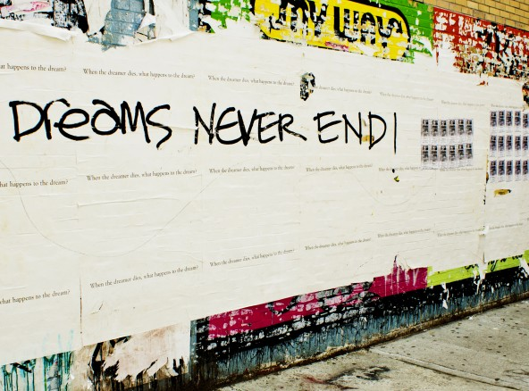

Hello New York
In april 2012 we took Central Park Office overseas and we realised our dream. For five weeks we left everything behind to get inspired by the city of our dreams. Meeting people, telling our story and finding the values Central Park Office is based on.
During our journey we learned what our story is and how to tell this. Visiting different companies and meeting like-minded people opened up a whole new world for us. Sharing and showing our knowledge and products was a great experience to take the next step in professionalizing ourselves.
Hello New York now is a an essential part of Central Park Office. We may not have our office at Central Park but it did help us to further define our vision, grow in our personal leadership and find new dreams. It’s the story that will forever connect us.
Check out the videos to see some of the stuff we did during the five weeks in New York, if you want to know more, please send us a message and invite us for coffee.
During our time in New York we were asked to be speakers at Rutgers University: